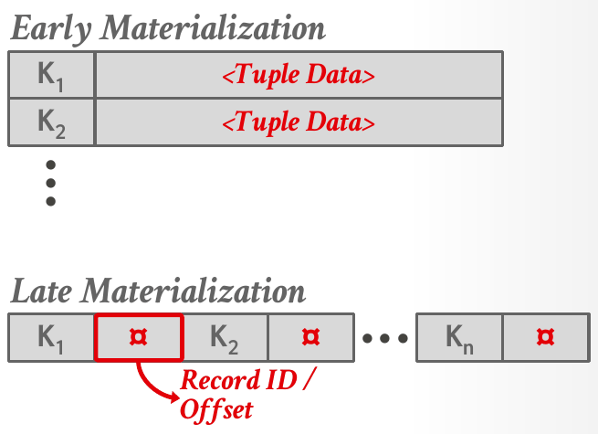
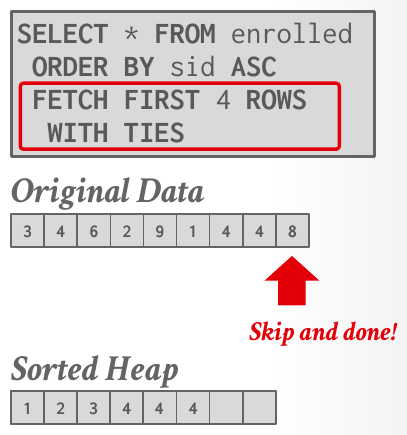
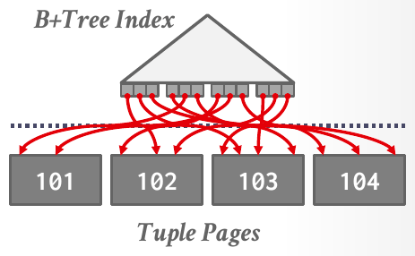

Database Internals in Go · Unit 5 · Lesson 1
Sorting: External Merge Sort
Sort data that doesn't fit in memory with external merge sort, count its passes and I/Os for any number of pages and buffers, and recognize when a top-N heap or a B+tree makes the sort unnecessary.
Units 1 to 4 built the bottom of the DBMS: pages on disk, the buffer pool that caches them, and the indexes that find tuples quickly. Unit 5 moves up to the operators that execute a query, starting with sorting. A disk-oriented DBMS can't assume that a query's intermediate results fit in memory, so its sort has to spill to disk and still read and write pages sequentially. External merge sort does that, and Project 3 asks you to build one. Its I/O formula is also the sort cost inside the sort-merge join of Lesson 3.
Unit 1, Lesson 1: one of Lecture #03's design goals for a disk-oriented DBMS is to maximize sequential access. Why?
Unit 2, Lesson 2: what is sequential flooding under an LRU replacement policy?
Unit 3, Lesson 4: a non-clustered B+tree index returns matching tuples whose record IDs point all over the table. How does Lecture #08 avoid reading the same table page again and again?
From access methods to operators
Lecture #11 opens the course's next layer. The DBMS compiles a SQL query into a query plan: a tree of operators (the notes allow a DAG), where data flows from the leaves up to the root and the root's output is the query's result. The slide's example joins R and S on id, filters S on value > 100, and projects two columns. Each operator needs an algorithm, and the next lectures supply them: sorting and aggregation in Lecture #11, joins in Lecture #12.
Slide 5 adds two rules. A disk-oriented DBMS can't assume that a table fits in memory, and for the same reason it can't assume that a query's results fit in memory either. Operator algorithms that need more memory than they have use the buffer pool to spill to disk. And because random disk access is slow, the lecture prefers algorithms that maximize sequential I/O.
Why a DBMS sorts
Under the relational model a table has no order, so a query that asks for one with ORDER BY needs a sort. Slide 6 lists three uses even when the query asks for no order:
- Duplicate elimination (
DISTINCT) becomes trivial: after sorting, duplicates sit next to each other. - Bulk loading sorted tuples into a B+tree is faster. Unit 3, Lesson 5 showed how to build a tree bottom up from sorted keys.
- Aggregations (
GROUP BY) can collect each group from consecutive tuples. The next lesson does this.
The notes add that joins may use sorting too, which is Lesson 3's sort-merge join.
If the data fits in memory, the DBMS uses a standard in-memory algorithm. Slide 7 names VergeSort for data that is mostly sorted, and otherwise "your favorite" (QuickSort, TimSort, RadixSort). If the data doesn't fit, the DBMS needs an external sort: one that is aware of the cost of reading and writing disk pages.
Runs, keys and values
A sorting algorithm works on a run: a list of key/value pairs that it sorts with a comparison function. The key is the attribute or attributes being compared. The value has two choices:
- Early materialization: the value is the whole tuple, so the sorted output already holds everything later operators need.
- Late materialization: the value is a record ID or offset, so the run is smaller, and the DBMS fetches the tuples later.

The same pair of terms comes back in Lesson 3 for what a join emits. Lecture #13 also has a "materialization model" for passing data between operators, which is a different idea.
Top-N heap sort
Some queries don't need the whole table sorted. If a query has an ORDER BY with a LIMIT, the DBMS only needs the top N elements, and it can find them in a single scan. The slide calls this the ideal case for heap sort when the top N fit in memory: scan the data once and keep an in-memory sorted priority queue of the best N seen so far. The notes add that with WITH TIES the priority queue is extended on demand to keep the ties.
Slide 10 runs SELECT * FROM enrolled ORDER BY sid ASC FETCH FIRST 4 ROWS WITH TIES over the sids 3, 4, 6, 2, 9, 1, 4, 4, 8. The heap grows to [2, 3, 4, 6]. 9 is larger than everything in the full heap, so it is skipped. 1 pushes 6 out, giving [1, 2, 3, 4]. The next two 4s tie with the fourth value, so the heap keeps them: [1, 2, 3, 4, 4, 4]. 8 is skipped, and the scan is done.

Unit 0, Lesson 2 noted that DuckDB rejects the standard's FETCH FIRST n ROWS WITH TIES, so you can't run the slide's query there as written. LIMIT 4 without ties would return 1, 2, 3, 4.
#11 Sorting & Aggregation Algorithms, "Top-N heap sort" (17:16), slides 9–10: the agenda, then the heap build above, one value at a time.
External merge sort
External merge sort is the divide-and-conquer sort for data larger than memory. It has two phases:
- Phase 1, sorting: sort chunks of data that fit in memory, with any in-memory algorithm, and write each sorted chunk back to a file on disk.
- Phase 2, merging: combine sorted runs into larger sorted runs, until one run holds everything.
The algorithm is described in passes. In each pass the DBMS reads every page of the file and writes every page back, so one pass costs 2N I/Os for a file of N pages.
The 2-way version
The simplest version merges two runs at a time, which is what the "2" in 2-way external merge sort means. Let the data span N pages, and let the DBMS have B buffer pages for input and output.
- Pass 0 reads one page of the table into memory, sorts it into a one-page run, and writes it back. It repeats until every page is a sorted run.
- Passes 1, 2, 3, … recursively merge pairs of runs into runs twice as long. A merge reads one page from each of the two input runs, takes the smaller front value each time, and writes the result into a third buffer page. When the output page fills up, it goes to disk and an empty page takes its place.
So the merge needs at least 3 buffer pages: 2 for input and 1 for output. Pass 0 produces N runs, and each later pass halves the number of runs, so
passes = 1 + ⌈log2 N⌉ and total I/O = 2N × passes.

Slide 15 points out the weakness. This algorithm needs only three buffer pages, and even when more buffer space is available (B > 3) it doesn't use it effectively, because the worker must block on disk I/O. Its pass count depends only on N.
The general version
General (K-way) external merge sort puts all B buffers to work:
- Pass 0 reads B pages at a time, sorts them, and writes them back as one run. It produces ⌈N / B⌉ sorted runs of B pages each (the last one may be shorter).
- Passes 1, 2, 3, … merge B − 1 runs at a time. The notes describe the buffers: B − 1 pages step through the input runs, and one page holds the combined output.
passes = 1 + ⌈logB−1 ⌈N / B⌉⌉ and total I/O = 2N × passes.
The two places where B appears are easy to mix up. Pass 0 divides by B, because all B pages hold data being sorted. The merges use base B − 1, because one page is reserved for output.
Slide 17 works the formula for N = 108 pages and B = 5 buffers:
- Pass 0: ⌈108 / 5⌉ = 22 sorted runs of 5 pages each; the last run has only 3.
- Pass 1: ⌈22 / 4⌉ = 6 sorted runs of 20 pages each; the last has only 8.
- Pass 2: ⌈6 / 4⌉ = 2 sorted runs, of 80 and 28 pages.
- Pass 3: one sorted file of 108 pages.
The formula agrees: 1 + ⌈log4 22⌉ = 1 + ⌈2.229…⌉ = 4 passes, so the sort costs 2 × 108 × 4 = 864 I/Os. The 2-way version would need 1 + ⌈log2 108⌉ = 8 passes for the same file.
The formula also gives a quick limit. Pass 0 makes runs of B pages, and one merge pass can combine B − 1 of them, so two passes sort any file of up to B(B − 1) pages. With B = 100 that is 9,900 pages; at 9,901 pages a third pass is needed.
#11 Sorting & Aggregation Algorithms, "External merge sort" (24:17), slides 11–17: the two phases, the 2-way build pass by pass, the general formula and the N = 108 example.
Making the sort faster
Lecture #11 has one optimization for the time a sort spends waiting on I/O and three for the time it spends comparing keys.
Double buffering prefetches the next run in the background into a second buffer while the current run is being processed, so CPU work and I/O overlap. The cost is that it halves the buffers available to the sort, which can add passes. The notes add that it needs multiple threads, since the prefetch must run while the computation for the current run is happening.
Comparisons are the other cost. Slide 19 lists three ways to make them cheaper:
- Code specialization: instead of passing the sort a comparison function as a pointer, create a hard-coded version of the sort for one key type. The notes give C++ template specialization as an example.
- Suffix truncation: for long
VARCHARkeys, first compare a binary prefix, and fall back to the slower full comparison only when the prefixes are equal. The name refers to ignoring each key's suffix at first. - Key normalization: transform variable-length attributes into a single encoded, padded string that preserves the sort order, so every comparison is a plain byte comparison.
Go's standard library shows both sides of code specialization. slices.SortFunc(s, cmp) calls your comparison function for every comparison, like the function-pointer sort on the slide. slices.Sort(s) accepts only ordered element types such as int or string, and compares them with cmp.Less, which uses the < operator; you pass no function at all. Key normalization has a Go shape too: once keys are encoded as order-preserving byte strings, bytes.Compare sorts them, whatever the original column types were.
Sorting with a B+tree instead
If the table already has a B+tree index on the sort attributes, the DBMS can produce the sorted order by traversing the leaf pages, and the notes add that some DBMSs support prefix key scans for this. Whether that beats external merge sort depends on the index:
- With a clustered B+tree, the table itself is stored in index order. The DBMS goes to the left-most leaf and retrieves the tuples from every leaf page in turn. Slide 21 calls this always better than external sorting: there is no computational cost, and all disk access is sequential.
- With an unclustered B+tree, the leaves are in key order but the tuples are not, so the DBMS chases each pointer to the page that holds its tuple. In general that is one I/O per data record. Slide 22 calls it almost always a bad idea, except for top-N queries where N is small relative to the table.

Unit 3's fix for non-clustered scans, sorting the record IDs by page first, fetches each page once but returns the tuples in page order. A sort needs them in key order, so that fix doesn't help here.
#11 Sorting & Aggregation Algorithms, "Index-based sorting" (41:16), slides 20–22: the clustered and unclustered cases.
What Project 3 builds
Project 3 implements a set of query operators: an external merge sort, a hash aggregation, and nested-loop, index nested-loop and hash joins. The sort in this lesson maps onto it as follows, according to BusTub at d49b823 and the Fall 2025 writeup:
- BusTub uses a sort plan node for every
ORDER BY, except when the sort attributes match the keys of an index. Then the optimizer reads the index in order instead (slide 20's idea). BusTub's indexes are not clustered, so this is slide 22's case, and the rule applies it without weighing the cost. - The writeup assumes that the table being sorted does not fit in memory. The sort must store its intermediate runs in temporary pages and merge them recursively. An in-memory sort is allowed only for the tuples on one sort page, and pages from a finished round must be deleted.
- BusTub's sort executor is a template over the merge's fan-in, but the writeup says it will only test two-way external merge sort this semester. That is the 3-buffer algorithm, so your sort will do 1 + ⌈log2 N⌉ passes however large the buffer pool is.
- Each sort entry pairs a sort key with the whole tuple, which is early materialization.
- BusTub also has a top-N executor, and its optimizer has an unfinished rule, left for students to write, that would turn a sort followed by a limit into it.
Work it out
-
What to think about
How many runs does pass 0 produce in each version? How many runs can one merge pass combine?
The method
General: pass 0 makes ⌈N / B⌉ runs, and each merge pass divides the run count by B − 1, rounding up, until one run is left. 2-way: pass 0 makes N one-page runs, and each pass halves the count. Multiply 2N by the number of passes.
The result
General: ⌈500 / 100⌉ = 5 runs, one 99-way merge finishes, so 2 passes and 2 × 500 × 2 = 2,000 I/Os. 2-way: 1 + ⌈log2 500⌉ = 1 + 9 = 10 passes and 2 × 500 × 10 = 10,000 I/Os. The extra 97 buffers save 8,000 I/Os.
-
What to think about
Two passes means pass 0 and a single merge pass. How many runs can that merge take, and how long is each run?
The method
One merge combines B − 1 runs of B pages each, so the limit is B(B − 1). Then evaluate 1 + ⌈log4 ⌈N / 5⌉⌉ at the limit and one above it.
The result
5 × 4 = 20 pages. At N = 20, pass 0 makes 4 runs and 1 + ⌈log4 4⌉ = 2. At N = 21 it makes 5 runs, and 1 + ⌈log4 5⌉ = 3.
The homework behind these questions
The questions marked HW4 come from CMU's Homework #4: Question 1, with the original figures. Work each one out on paper first, then click the option you got. The quiz tells you at once whether it matches CMU's official answer, and explains why. To compare your working step by step, open the official solutions for Question 1.
Check your understanding
The first two questions come from HW4's Question 1. The buffer has B = 100 pages; table X spans M = 1,000 pages and table Z spans O = 3,000 pages. Before a sort-merge join (Lesson 3) can merge them on attribute a, it sorts each one with external merge sort.
HW4 Q1(d)i: what is the cost of sorting the tuples in X on attribute a?
HW4 Q1(d)ii: what is the cost of sorting the tuples in Z on attribute a?
A file of N = 1,000,000 pages is sorted with B = 100 buffer pages by the general external merge sort. How many passes and I/Os does it take?
Top-N heap sort runs ORDER BY sid ASC FETCH FIRST 3 ROWS WITH TIES over the sids 5, 2, 7, 2, 9, 1, 5, 2, 3. Which rows does it return?
A query needs a large table in sorted order, and the table has a B+tree on the sort key. When is traversing the B+tree's leaves better than running external merge sort?
Primary sources: CMU 15-445/645 Fall 2025 Lecture #11 slides 3–22 and notes (sections 1–2); Homework #4 Question 1(d) and its official solutions; the Project #3 writeup (external merge sort and optimizer sections); BusTub src/include/execution/executors/external_merge_sort_executor.h and src/include/execution/execution_common.h at commit d49b823; the Go 1.24 source of slices and the documentation for bytes.